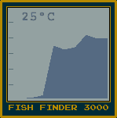
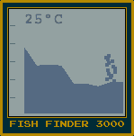
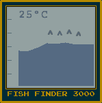

Your fish finder is state of the art. It records depth, structure and fish underneath your boat, and displays a history from the right-hand side of the LCD (most recent scan) to the left-hand side (oldest scan).
As time passes the display shifts towards the left, giving a short history of fish-finding activity.
Here you can see the depth climbing as our boat moved. The fish finder also displays the water temperature.

Underwater structure (plants, submerged logs or overhangs) display as columns of noise:

Fish display as chevrons. Here you see fish underneath our boat over a period of a few turns (most recent on the right-hand side):
